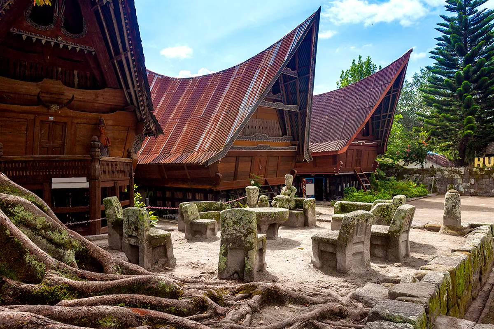
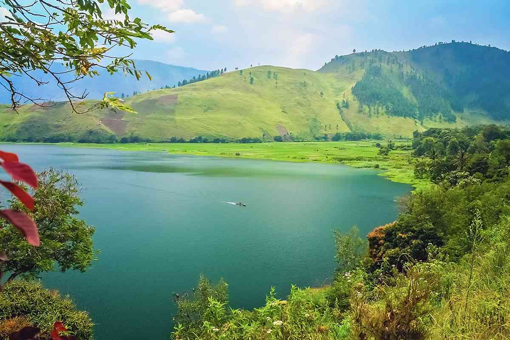

Danau Toba, Danau Indonesia yang Spektakuler
Siapa yang tidak tahu Danau Toba. Sebagai sebuah aset kekayaan Indonesia, Danau ini memiliki nilai sejarah yang tinggi. Selain jadi danau terbesar di Indonesia ternyata Danau Toba juga termasuk danau vulkanik terbesar di dunia lho. Teringat kembali ke masa kecil, Danau Toba turut serta dijadikan sebuah ikon keindahan nusantara dalam permainan monopoli, kemudian tak bisa lepas juga dari Dongeng Asal Usul Danau Toba dan Pulau Samosir. Dari sinilah pertama kali saya mengenal dan berharap suatu saat bisa menginjakan kaki di Tanah Batak ini, Danau Toba.
Sejarah
Danau Toba adalah sebuah keajaiban alam yang sangat menakjubkan. Danau ini diperkirakan terbentuk dari letusan dahsyat sebuah gunung api, Gunung Toba, yang terjadi sekitar 74.000 tahun yang lalu. Dengan luas lebih dari 1.145 kilometer persegi dan kedalaman 450 meter, Danau Toba sebenarnya lebih mirip lautan daripada danau.
Di tengah danau vulkanik terbesar di dunia ini juga terdapat sebuah pulau yang berukuran cukup besar, yaitu Pulau Samosir.
Destinasi
Danau Toba menjadi tempat yang sempurna untuk bersantai, karena udaranya sangat sejuk dan suasananya pun amat tenang. Tentu saja, sebab letak Danau Toba berada di 900 meter di atas permukaan laut. Selain panorama danau yang memukau, Sobat Pesona juga akan disuguhkan keindahan pemandangan deretan pegunungan dan pepohonan hijau yang menyegarkan mata. Pokoknya, cocok jadi tempat untuk melepas penat, deh!
Daya Tarik
Ada banyak sekali cara bagi Sobat Pesona untuk menikmati pemandangan alam Danau Toba dan sekitarnya. Untuk SObat Pesona penyuka wisata olahraga air, mengitari Danau Toba dengan menggunakan kayak menjadi hal yang bisa dicoba saat ke sini. Terdapat tiga rute yang bisa Sobat Pesona ambil saat menjelajah Danau Toba dengan kayak. Rute yang mudah Tongging – Silalahi sepanjang 12 km, rute yang cukup menantang Tongging - Samosir sekitar 50 km, terakhir adalah rute yang sangat sulit yaitu Lingkaran Utara sejauh 175 km.
Hal unik lainnya yang bisa kamu temui di kawasan Danau Toba, yaitu boneka kayu seukuran manusia yang diberi nama Sigale-gale. Sigale-gale dikenal karena kemistisan dan mitos yang melekat di dalamnya, lho! Masyarakat lokal percaya bahwa boneka Sigale-gale bisa menari dan meratap sendiri tanpa diiringi musik. Beberapa dari mereka juga berkata bahwa boneka Sigale-gale hanya bisa diletakkan di dalam peti. Boneka ini juga biasanya digunakan dalam upacara kematian keluarga di daerah Samosir, karena masyarakat lokal percaya bahwa tarian Sigale-gale akan mengantarkan roh mereka yang telah mati ke alam baka.
Nah, bagi Sobat Pesona yang tengah mencari oleh-oleh, kain ulos adalah oleh-oleh wajib saat berkunjung ke Danau Toba. Tak hanya berfungsi sebagai pakaian, ulos juga dipercaya sebagai simbol status sosial dan kerap dipakai di berbagai perayaan penting, seperti kelahiran dan pernikahan. Selain ulos, ada juga ukiran kayu asli dengan bentuk unik dan menarik yang bisa Sobat Pesona jadikan sebagai cenderamata. Untuk Sobat Pesona yang gemar minum kopi, pastikan jangan lupa untuk membeli jenis-jenis kopi yang terkenal dari Danau Toba, seperti kopi lintong dan kopi sidikalang, ya! Sampai berjumpa di Danau Toba, Sobat Pesona!
Cara ke Danau Toba
Ada dua cara yang bisa ditempuh Sobat Pesona untuk ke danau ini, yaitu melalui jalur laut atau jalur udara:
- Jalur Udara :
- Jalur Darat :
Jika Sobat Pesona berencana untuk ke Danau Toba menggunakan transportasi udara, terdapat dua jalur yang bisa dipilih. Pilihan pertama, dari Bandara Internasional Kualanamu, Medan, Sobat Pesona bisa naik pesawat menuju Bandara Internasional Sisingamangaraja XII yang terletak di Siborongborong, Tapanuli Utara. Kemudian, dari bandara ini, Sobat Pesona bisa meneruskan perjalanan ke Danau Toba menggunakan jalur darat. Pilihan kedua, Sobat Pesona bisa langsung memilih penerbangan ke Bandara Internasional Sisingamangaraja XII dari Jakarta atau dari beberapa kota besar lainnya. Cek dulu ketersediaan maskapai penerbangan dari daerahmu ya, Sobat Pesona!
Nah, jika Sobat Pesona menggunakan jalur darat dari Medan, Sobat Pesona bisa menggunakan bus jurusan Medan-Parapat yang bisa ditempuh dalam waktu kurang lebih 4 jam. Namun, bila ingin melakukan perjalanan yang lebih pribadi dan santai, tersedia pula agen-agen perjalanan di kota Medan yang bisa membantu Sobat Pesona untuk mengatur penyewaan mobil dan supir ke Danau Toba. Sobat Pesona juga bisa melanjutkan perjalanan dari Danau Toba ke Pulau Samosir. Pilihannya adalah naik kapal feri yang dijadwalkan berangkat setiap satu jam sekali di Pelabuhan Ajibata menuju Pelabuhan Tomok. Atau, Sobat Pesona juga bisa berangkat dari Pelabuhan Muara ke Pelabuhan Sipinggan yang jadwal keberangkatan kapalnya hanya dua kali sehari, yaitu jam 06.30 WIB dan 15.00 WIB. Jadwal ini dapat berubah sewaktu-waktu, pastikan Sobat Pesona selalu mencari info terbaru, ya!
Picts Of Lake Toba